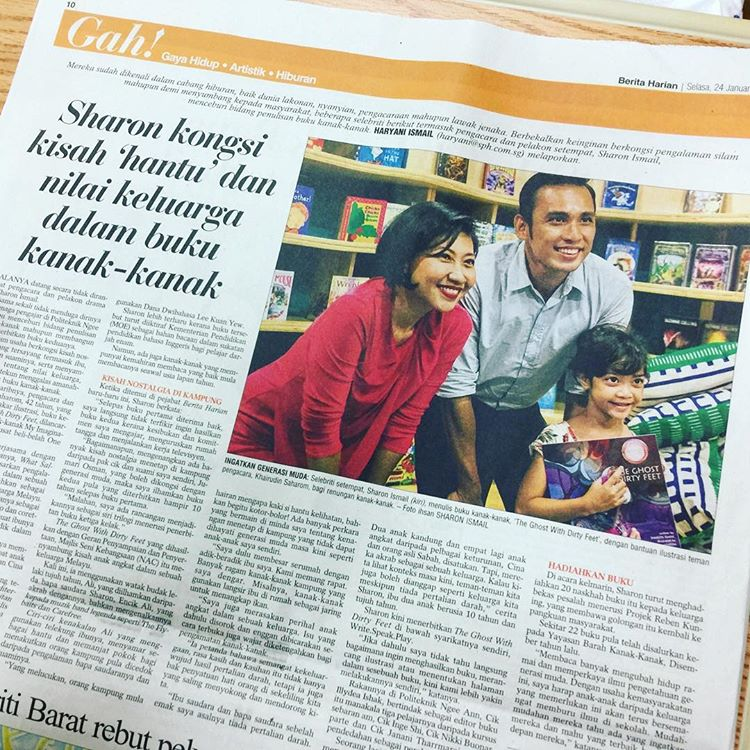

Many of the typesetting found in the book follow odd shapes and unusual styles as requested by author Sharon Ismail so that children will enjoy reading the book.

Top: The Ghost with Dirty Feet has been featured in Berita Harian and The Straits Times for its family values and Singaporean setting.
Left: Author Sharon Ismail and illustrator Khairudin Saharom have worked together on the prequel to The Ghost with Dirty Feet called What Sallamah Didn't Know. The prequel has been translated into Malay, Chinese and Tamil.